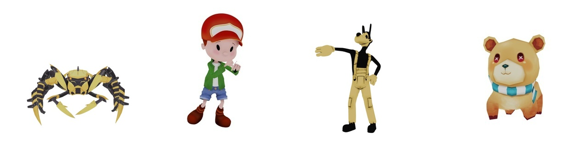

3D GAUSSIANS · RIGGING FOR ANIMATION
Learning Animation-Aware
3D Gaussians with
Native Rigging

01 / Dataset
3D Gaussian
Rigging.
Humanoids, animals, articulated creatures, plants and others.
02 / MOTION COMPARISONS
See the difference
in motion.
One pose and camera sequence, shared by every method. Choose a character, compare two methods, or inspect all methods together.
Videos show full selected sequences. Each clip uses a shared crop across all methods and all frames. The sequence averages above are measured on the original full-resolution renders; video compression and display crops do not affect the reported metrics.
Scene ID and video playback information
Clips are displayed at 24 fps, or 12 / 6 fps for short sequences. This is a presentation speed, not a claim about the source motion capture rate. The ground-truth image and every prediction at a given frame share the same camera and pose.
03 / QUANTITATIVE EVALUATION
A common test set.
A complete comparison.
All six methods are evaluated on the same 600 characters and 52,246 frames.
| Method | PSNR ↑ | SSIM ↑ | LPIPS ↓ |
|---|
Ours
Input 3D Gaussians with Ours predicted skinning.
Ours*
Animation-aware 3D Gaussians with Ours predicted skinning.